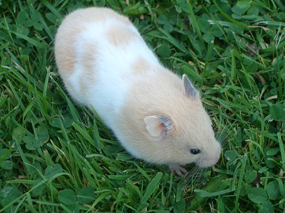
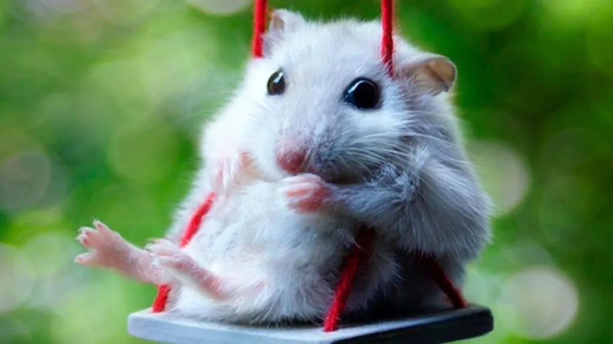

¿Qué son los Hámsteres?
Los cricetinos (Cricetinae) son una subfamilia de roedores,
conocidos comúnmente como hámsteres.
La mayoría son originarias de Oriente Medio y del sureste de los Estados Unidos.
Todas las especies se caracterizan por las bolsas expansibles, llamadas
abazones, ubicadas en el interior de la boca y que van desde las mejillas
hasta los hombros.

Características de los hámsteres
Su esperanza de vida es de año y medio a tres años, aunque existen variaciones
según la especie, pero no pasan de los cuatro años. Pesan de 30-40 gramos
en algunas especies, en otras de 100-180 gramos. Su longitud es de 8-18
centímetros. Su periodo de gestación va de 15 a 21 días. Todas estas
características varían según la especie, pero ese es el rango promedio.
Hábitat de los hámsteres
La mayoría son nativos de Estados Unidos, Asia u Oriente Medio, pero también
habitan China y lugares de Europa. Aquellos que sonn salvajes hacen madrigueras
u hoyos en el suelo, que llegan a medir, incluso, 2 metros de profundidad, y
estos sirven para resguardarse de sus depredadores.
